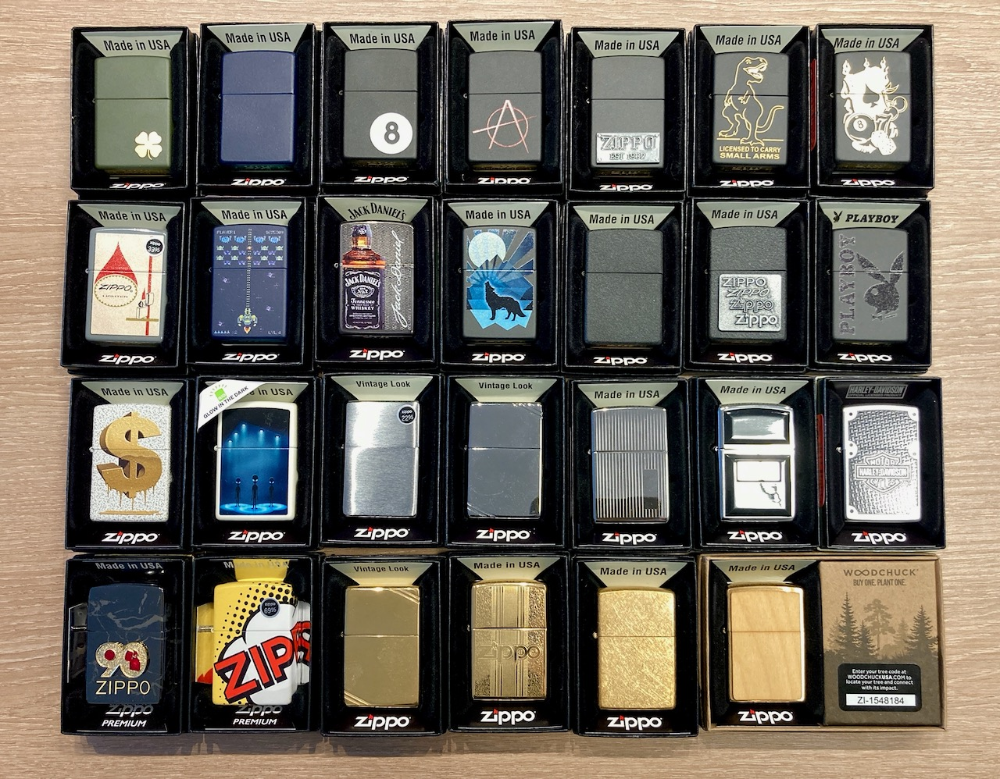

How I start
I first heard about Zippo lighters was when I was watching cigar reviews. There is a huge debate on whether you should light your cigar with Zippo lighters or not. BiC lighters have always been my go-to because they are cheap and accessible from stores everywhere. Zippo lighters in comparison were more difficult to locate. The only place where I could find them was Amazon and that is where I got my first Zippo.
My Zippo Collection
The first one that I bought was the Navy Blue Matte. The case feels amazing and I was instantly in love! ❤ The flicking mechanism is fun. I am not a huge fan over the "distinctive Zippo click". Regardless, it's an added bonus and a fun gadget to fiddle with. Since then, I have spent about on this collection. 💸
Group Photo
This is not the most up-to-date pic of my collection, but it's nice to include it so I don't have to take them out as frequently.

This group picture was last taken on March 14, 2024.